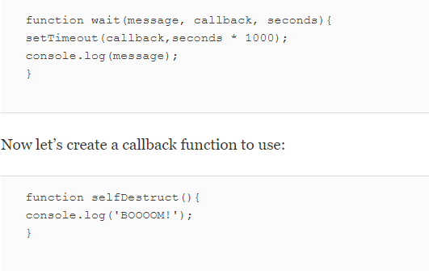
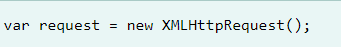
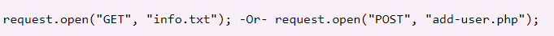

Week 7- Further Functions and Ajax summarized,
FurtherFunctions
In JavaScript, functions are first-class objects, which means they can be passed around in the same way as every other value.They are a flexible tool to work with in javascript as they can have their own properties and methods, thus accepting other functions as parameters and being returned by other functions. Here we are going to learn some very important concept like:
Function Properties and Methods
Functions having properties and methods themselves show while function is a first-class objects. The following image shows an example of length property in a functions that return the number of parameters the functions has.
Recursive Functions
This is a function that invokes itself until a certain condition is met. when iterative processes are involved it is an important tool to use. the image below shows an example how a recursive functions works.
Callbacks
It can be used to facilitate event-driven asynchronous programming. Instead of waiting for an event to occur, a callback can be created that’s invoked when the event happens. This means that the code is able to run out of order, or asynchronously.Events can be DOM events, such as the click and keyPress. By using callbacks, we ensure that waiting for these tasks to complete doesn't hold up the execution of other parts of the program. The following image shows an example of a function called wait() that accepts a callback.

Functions that return functions
We see above what callbacks do, enabling functions to accept another function as an argument. In the same vain they can return function too. The following image below is an example showing a function called returnHello() that returns a 'Hello World' function:
To invoke the 'Hello World' function we place parentheses after the variable that it was assigned to, The following image show an example of what we mean:
Closures
Is a reference to a variable that is created inside the scope of another function, but is then kept alive and used in another part of the program. in actual sense it means that whenever a function is defined inside another function, the inner function will have access to any variables that are declared in the outer function's scope.
The image below shows an example code of closures:
Ajax
Ajax is a set of web development technique that allows web pages to communicate asynchronously with a server, and it dynamically updates web pages without reloading. This means web applications can send and retrieve data from a server asynchronously without interfering with the display and behaviour of the existing page. However for clarity sakes it is good we know what Ajax stands for. Ajax stands for Asynchronous Javascript And Xml. Ajax is just a means of loading data from the server and selectively updating parts of a web page without reloading the whole page.Basically, what Ajax does is make use of the browser's built-in XMLHttpRequest (XHR) object to send and receive information to and from a web server asynchronously, in the background, without blocking the page or interfering with the user's experience.
Understanding How Ajax Works
To perform Ajax communication JavaScript uses a special object built into the browser—an XMLHttpRequest (XHR) object—to make HTTP requests to the server and receive data in response. The following image shows an example, demonstrating how Ajax communication works:
This Image above helps us understand how Ajax works! However, before we perform Ajax comunication between client and server, the first thing we must do is instantiate an XMLHttpRequest The image below will show us exacly what I mean.

The next step needed in sending the request to the server is to instantiating the newly created request object in our image above, using the open() method of the XMLHttpRequest object.
The open() method thus accepts two parameters-the HTTP request method to use, such as "GET". "POST", etc., and the URL to send the request to like this in the image sample below:

finally to send the request in the image above to the server we use the send() method of the XMLHttpRequest object.
Note: The file can be of any kind, like .txt or .xml, or server-side scripting files, like .php or .asp, which can perform some actions on the server (e.g. inserting or reading data from database) before sending the response back to the client.
The send() method accepts an optional body parameter which allow us to specify the request's body. This is primarily used for HTTP POST requests, since the HTTP GET request doesn't have a request body, just request headers.